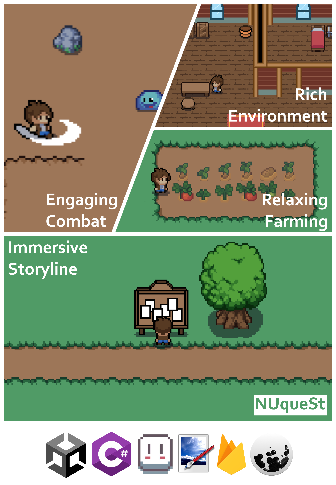

CP2106 (Orbital) - NUqueSt
May 2023 – Aug 2023
Project Overview
Developed a full stack top-down 2D RPG game using Unity Engine and C#.
Advanced AI algorithm for path finding used by in-game characters.
Nominated as the top 9% for being one of the best projects out of over 150 teams.
Known for being one of the most uniquely designed games in the cohort due to the in-game quests being designed to be in the context of NUS mods so that players learn about the mods in NUS before taking them.
Key Features
- Unity Engine, C#
- AI pathfinding for in-game characters
- OOP and software engineering best practices
- Project management: issue trackers, milestones, agile, scrum
- Testing: unit, integration, system